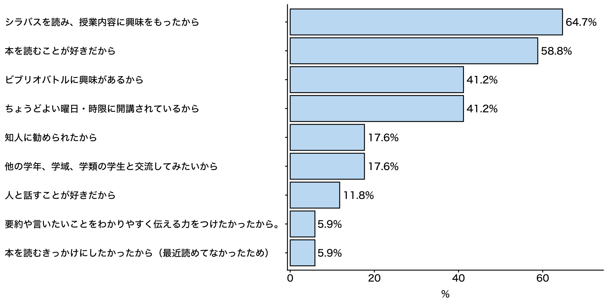
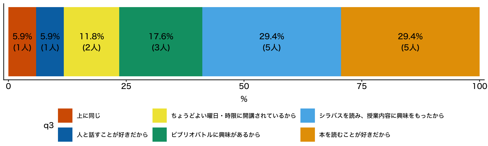
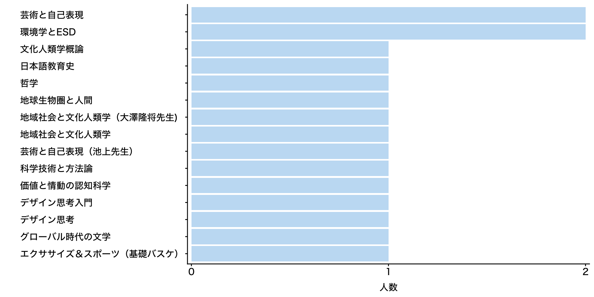
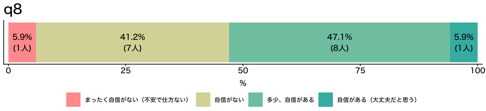
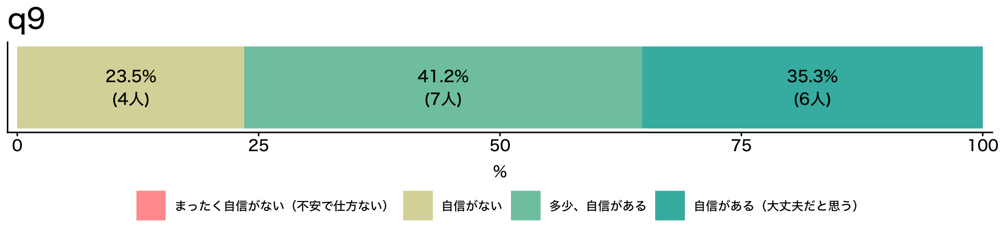
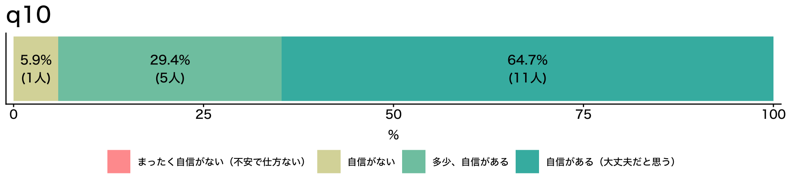
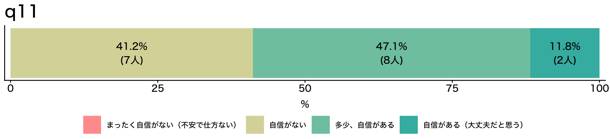

ビブリオバトル入門《2026》
#2 好きな本を紹介しよう①：第1ラウンド
![]()
October 14, 2025
Ⅰ. 授業の感想
授業の感想
ビブリオバトルは、バトルというくらいなので、相手の発表の矛盾や不十分な点を質問したり指摘したりして競争相手を負かすイメージがあったが、「本を通して人を知る、人を通して本を知る」というようにある種のコミュニケーションの一つであり、お互いの世界を紹介しあう手段だということを学んだ。本好きであるにもかかわらず、一人暮らしだとなかなか本を読もうとなれないという受講生の話に共感できた（厚見さん）。
文系の人が多いのかなと思ったら、意外と同じグループに医学類の人が2人もいて驚きました。専攻の本を紹介って、医学書……！？読みたい人居るか……！？と困っていたようで、生物学の本とか健康の本とかで行けるんじゃないかと楽しく相談できました。私は人文学類のプログラムも決まってない一年なので、これはこれで自分の研究分野とか分からないのですが、ちょっと外れたところでも大丈夫でしょうか。なんにせよ次回は趣味100%の本紹介なので頑張りたいです（上田さん）。
はじめはビブリオはバトルのようなものであり、競争をしなくてはいけないと感じていたが今回の授業でそれは間違いであり、本をより好きになるため、そして自分を知ってもらい仲良くなるためにすることのように感じた。特にビブリオバトルにおいて相手の話に耳を傾け、よく理解しようと努める姿勢は必須だと思うがこれを日常生活で正しくできているかと考えると存外そうでもない気がする。今後の人生において必要不可欠なコミュニケーションへの重要な経験と技術を得るためにも今後の授業を真剣に取り組んで実のあるものにしたい（竹田さん）。
授業の感想
私の高校でも図書室で時々ビブリオバトルが行われていたので、ビブリオバトルというものの存在は知っていました。私はまだ経験がありませんでしたが、自己紹介をしあった班の人の中にはビブリオバトルを経験したことがある人が2人もいました。私はお互いにおすすめの本を紹介するというイメージをもっていただけでした。しかし、班にいた方が、ビブリオバトルをする場では初対面で共通の話題が乏しく、何を話したらいいのかよく分からない場合でも、本があることでたくさん交流できるという事を教えてくれたのが心に残っています（藤井さん）。
小学生のときにビブリオバトルを1度経験したことがあるが、今日の授業の中でビブリオバトルの起源を初めて知った。また、先生が立命館大学で働いていた時の話の中で京都大学の先生とよく交流があり、彼らとの飲み会の中でおすすめの本の話をし合っていたというエピソードについて、「頭のいい人はやっぱりたくさん本を読むんだなー」と思い、よく記憶に残っている（松永さん）。
ビブリオバトルは競技のようなイメージがあった。しかし本来は本の良さを他の人に伝えるためのものであり、だからこそメモはなるべく見ずに記憶を頼りに5分間話すことが重要なのだと感じた。小説に関しては話の内容を伝えすぎずに魅力を伝えることが、学問に関する本に関しては簡潔に内容を伝えることが重要になってくるだろう（若林さん）。
Ⅱ. 初回アンケート
初回アンケート > Q2. 受講理由（複数選択可）

初回アンケート > Q3. 受講理由（一択）

初回アンケート > Q4. 好きな授業

初回アンケート > 自己認識（Q5-Q6）
本の選択と紹介

グループワーク

初回アンケート > 自己認識（Q7-Q8）
他分野への関心

プレゼンテーション

Ⅲ. ビブリオバトル：好きな本を紹介しよう 第1ラウンド
ブクログ
好きな本

aa
この本、面白かったよ
💯 👍 ☺️
それって中学生が読む本じゃないの？恥ずかしくないのかな？🤭
🤮🤮🤮🤮🤮🤮
🤔（この人、大丈夫かな、頭）
本に年齢制限でもあるの？ 面白いと思ったなら、それでいいじゃん
（ありがとう🥳）
授業の約束（教員との約束）
この授業はグループワーク中心の授業です。教員一人では授業を作ることができません
- 教員：学びの空間設計者
- 受講生：コンテンツ制作者
皆さんも授業を作るメンバーとして、以下の3つを心がけて下さい
- 元気に毎回出席する（ただし無理は禁物）
- グループワークには積極的に参加する
- 提出物はちゃんと出す

グループワークの心理的安全性
重要 | 「この場では安心して意見を言える」という感覚が何より大切です
- グループワークで話したことは外に持ち出さない
- 相手の意見を批判しない（マウンティング行為を含む）
- グルームのメンバー全員が「つながり」を生む声かけを心がける（「◯◯さんはどう思いますか？」）
禁止 | マウンティング行為
- 知識ひけらかし型：「この本は原著で読んでるから、翻訳はちょっとね」/ 「作者の別の論文を読んでないと本当の意味は分からないよ」
- 先取り型：「あー、この後の展開は◯◯だから、そこまで読まないと面白さはわからないよ」/「私、もう続編も全部読んでるから」
- 比較優位型：「その感想は初心者っぽいね」 / 「自分はもっと難しい本を普段読んでるから、この本は物足りないかな」
- 発言の矮小化型：「その見方は浅いよ、本当はこう読むべきなんだ」 / 「その感想はよくあるけど、重要なのは別のところだよ」 / 「それってあなたの感想ですよね」
アイスブレイク
嘘つき自己紹介
- 嘘を突き通したら勝ち / 嘘を見抜いたら勝ち
- A4の紙を4つにおり、十字の線を入れて”4つの枠”を作る
- 左上に名前を書く。残り3つの枠に本人のこと紹介するキーワードなどを書く。ただし、1つだけ嘘を書く
- 順番に紙に書いた内容を説明する。1周目はすべて本当のように話す（まだどれが嘘かのネタバレはしない）
- 全員が回ったら、最初に話をした人が再度紙を見せて、聞き手の人が、どれが嘘かを当てる。その後ネタバレをして、実はなどと少しストーリーを語る
- 次の人が同じように、紙を見せて嘘がどれかを聞き手に当ててもらいネタバレをする（以下同様）
- 出典：てっちゃん（小笠原祐司）「初回の授業で「嘘つき自己紹介」は知り合い同士がいてもおすすめ」（リンク）
アイスブレイク > 嘘つき自己紹介
嘘つき自己紹介の例
ルールがわからない、ルールはわかったが何も思い浮かばない人のための例示です。これに縛られる必要はまったくありません
- テーマを決めて嘘をつく
- 好きなポケモンの中に、嫌いなポケモンを混ぜる
- 夏休みの過ごし方の中に、夏休みに行っていないことを混ぜる
- 属性などに嘘を混ぜる
- 出身地；アルバイト先；長女です；甲子園出場経験あり；教師志望
注意事項
笑えない嘘はやめましょう
アイスブレイク > 嘘つき自己紹介 > 記入例
呼ばれたい名前
（位置絶対）
（位置絶対）
本当のこと
（位置自由）
（位置自由）
本当のこと
（位置自由）
（位置自由）
嘘
（位置自由）
（位置自由）
アイスブレイク > 嘘つき自己紹介 > 記入例
先生
中国
アリストテレス
コーヒー
アイスブレイク > 嘘つき自己紹介
今日のタイムキーパー：スペード♠️
- クラス全体で時間管理しません。以下の時間に沿って、グループ毎で時間管理して下さい（若干であれば、伸びても大丈夫です）。タイムキーパーの裁量とします（次のビブリオバトルも同様）
タイムライン
- 考える時間：3分
- 嘘つき自己紹介 1回目（嘘をつく）：8分（一人2分程度）
- 嘘つき自己紹介 2回目（嘘を当てる）：8分（一人2分程度）
- 質問して、嘘を暴こう
ビブリオバトル：好きな本を紹介しよう①
本の紹介：5分（最低4分30秒は話すこと）
質疑応答：3分（しっかり3分間、質疑応答すること）
- ゼミや研究会で一番、辛いこと：誰からも質問が出ないこと
アフターセッション：5分（しっかり5分間話し合うこと）
- グループチャンプ本を決めて下さい
- 配布するカードに、日付、グループチャンプ本のタイトル、その受講生の名前、簡単な理由を書いて提出して下さい
- 残りの時間は、ブックカードのまとめ方、質疑応答の続きなど、各グループで有効に活用して下さい
Ⅳ. グループチャンプ本プレゼンテーション
グループチャンプ本プレゼンテーション
- 本の紹介：5分（最低4分30秒は話すこと）
- 質疑応答：3分（しっかり3分間、質疑応答すること）
次回から授業開始時に引くトランプにジョーカー🃏を混ぜます。ジョーカーを引いた人に司会（タイムキーパー）をお願いします
- プレゼンテーションシート
- 最終授業日に「クラスチャンプ本」を投票で決めます。忘れないためにメモを取っておいて下さい
- プレゼンテーションシートは回収しません
Ⅴ. 次回の授業と宿題
次回の授業と宿題
次回
- 好きな本を紹介しよう 第2ラウンド
宿題
- 授業の感想
- ブックカードの補足（補足したい人のみ）
先週、出席していない人は「初回の授業の感想（初回アンケートを含む）」の初回アンケートにもお答え下さい（Q1は「受講登録前」とお書き下さい）。